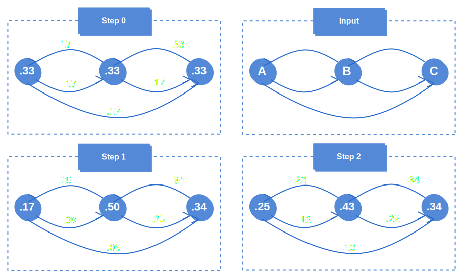
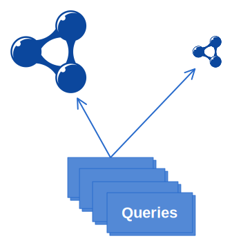

SampLD
Sampling Large Linked Data graphs

http://presentations.laurensrietveld.nl/20140408_uvaSeminar
Datasets
| Dataset | #triples | #queries | coverage |
|---|---|---|---|
| DBpedia | 764M | a lot | unknown yet |
| Linked Geo Data | 300M | a lot | unknown yet |
| Open-BioMed | 93M | 928 | 0.01% |
| BIO2RDF | 50M | 1294 | 1% |
| Semantic Web Dog Food | 0.25M | 197 | unknown yet |
How?
Informed vs. Uninformed
- Network Analysis
e.g. Pagerank, Betweenness, Indegree, Outdegree
- Rewrite RDF
- Aggregate node weights to triples
- Select k best triples
- Evaluate
Scalability
Hadoop

Pig
Giraph
How?
Informed vs. Uninformed
- Network Analysis
e.g. Pagerank, Betweenness, Indegree, Outdegree
- Rewrite RDF
- Aggregate node weights to triples
- Select k best triples
- Evaluate
PageRank
Assumption: important websites
receive more links
- The more votes you as page gets, the higher your authority, the higher your voting weight
- The more sites you point to, the less each vote counts

Pagerank
.PageRank + Giraph
Betweenness Centrality
Approach
- Calculate all shortest paths between all nodes
- Count the number of shortest paths each node is in
Problem
- dependency between all nodes (need shared memory)
Evaluation
Evaluation: Problems
- 6 datasets
- 16 sampling methods per dataset
- Samples are still quite large
- Fast loading of samples
- Powerful hardware
- STABILITY
Evaluation: How?
- Retrieve which triples are used by a query
- Use a hadoop cluster to find the weights of these triples
- Determine whether the weight of these triples is high enough to have been included in the sample
Evaluation: Example
Query
| ?person | ?country |
|---|---|
| :Laurens | :NL |
| :Stefan | :Germany |
Dataset
| Subject | Predicate | Object | Weight |
|---|---|---|---|
| :Laurens | :bornIn | :Amsterdam | 0.6 |
| :Amsterdam | :capitalOf | :NL | 0.1 |
| :Stefan | :bornIn | :Berline | 0.5 |
| :Berlin | :capitalOf | :Germany | 0.5 |
| :Rinke | :bornIn | :Heerenveen | 0.1 |
Heads Up
some d3js fancy stuff